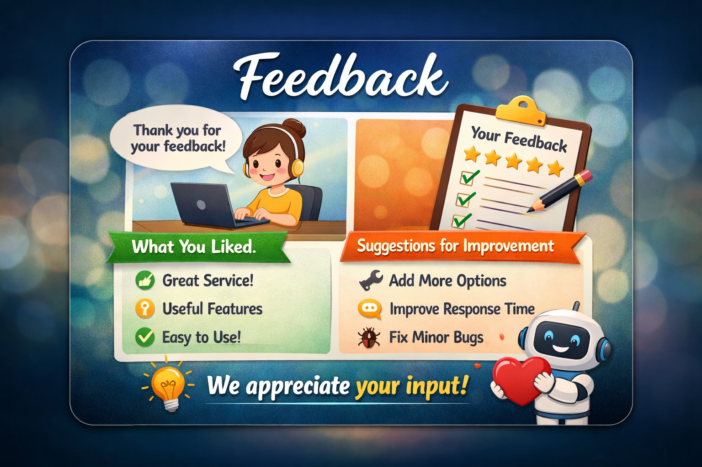

ข้อเสนอแนะและอนาคต
อนาคตของ Supply Chain จะมุ่งสู่ Autonomous Supply Chain
ที่ผสาน AI, IoT, Digital Twin และ Metaverse

สรุปข้อเสนอแนะจากรายงาน และเสนอไอเดียใหม่ๆ
สรุปข้อเสนอแนะจากรายงาน
จากผลการศึกษาการประยุกต์ใช้เทคโนโลยีปัญญาประดิษฐ์และระบบสารสนเทศในงาน Logistics & Supply Chain พบว่า องค์กรสามารถเพิ่มประสิทธิภาพการดำเนินงานได้อย่างชัดเจน ทั้งด้านความรวดเร็ว ความแม่นยำ และการลดต้นทุน อย่างไรก็ตาม การนำเทคโนโลยีมาใช้อย่างมีประสิทธิผลควรพิจารณาประเด็นสำคัญดังต่อไปนี้
ควรพัฒนาและปรับปรุงระบบ AI อย่างต่อเนื่อง
เพื่อให้สามารถเรียนรู้จากข้อมูลใหม่และรองรับสภาพตลาดที่เปลี่ยนแปลงอยู่ตลอดเวลา
ควรบูรณาการข้อมูลตลอดทั้งซัพพลายเชน
ตั้งแต่ผู้ผลิต คลังสินค้า ผู้ขนส่ง ไปจนถึงลูกค้า เพื่อให้การตัดสินใจมีความแม่นยำมากขึ้น
ควรพัฒนาทักษะด้านดิจิทัลของบุคลากร
เช่น การวิเคราะห์ข้อมูล การใช้ระบบอัตโนมัติ และความเข้าใจด้าน AI
ควรให้ความสำคัญกับความปลอดภัยของข้อมูล
รวมถึงการปฏิบัติตามกฎหมายคุ้มครองข้อมูลส่วนบุคคล เช่น PDPA และ GDPR
ควรเริ่มใช้งานจากโครงการขนาดเล็กก่อนขยายผล
เพื่อประเมินความคุ้มค่า ลดความเสี่ยง และเพิ่มโอกาสความสำเร็จของโครงการ
แนวคิดและไอเดียใหม่ในอนาคต
การผสาน AI กับ Metaverse ใน Supply Chain
ใช้สภาพแวดล้อมเสมือนจริงในการจำลองคลังสินค้า เส้นทางขนส่ง และกระบวนการทำงาน เพื่อช่วยให้ผู้บริหารสามารถวิเคราะห์และตัดสินใจได้อย่างแม่นยำมากขึ้น
Digital Twin สำหรับการจำลองระบบโลจิสติกส์
สร้างแบบจำลองเสมือนของคลังสินค้าและซัพพลายเชน เพื่อทดสอบแผนงานก่อนนำไปใช้งานจริง
Autonomous Supply Chain
ระบบซัพพลายเชนที่สามารถตัดสินใจได้อัตโนมัติ ตั้งแต่การสั่งซื้อ การผลิต ไปจนถึงการจัดส่งสินค้า
Green & Sustainable Logistics
ใช้ AI วิเคราะห์เส้นทางขนส่งที่ประหยัดพลังงาน ลดการปล่อยก๊าซคาร์บอน และสนับสนุนการพัฒนาอย่างยั่งยืน
Smart Warehouse เต็มรูปแบบ
การใช้หุ่นยนต์ AGV/AMR ร่วมกับ AI และ IoT เพื่อให้คลังสินค้าทำงานได้ตลอด 24 ชั่วโมง และลดการพึ่งพาแรงงานมนุษย์